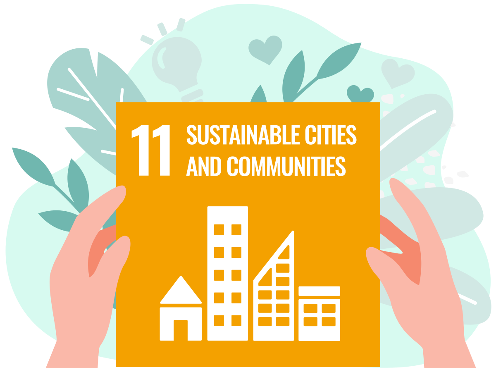
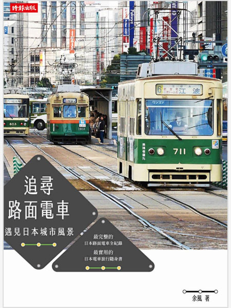

工業化、創新及基礎建設
建立具有韌性的基礎建設，促進包容且永續的工業，並加速創新
塞車塞到懷疑人生？雪梨推「共乘制度」，解決30年後的交通問題
詳全文
永續城鄉
建構具包容、安全、韌性及永續特質的城市與鄉村
建立具有韌性的基礎建設，促進包容且永續的工業，並加速創新
建構具包容、安全、韌性及永續特質的城市與鄉村
我國創新實驗示範場域的實踐與課題研析
軌道經濟未來式：珍珠串鍊下的車站城市

臺鐵風華．百年一瞬：歲月淬鍊下的經典車站及古蹟建築
白話AIoT數位轉型：一個掌握創新升級商機的故事
e科技的資安分析與關鍵證據：數位鑑識
研發經費與科技預算之國際比較
戰略性新興產業科技創新人才勝任力模型與開發模式研究
追尋路面電車：遇見日本城市風景
城市轨道交通新技术
城市軌道交通票務管理
綠色交通：慢活．友善．永續：以人為本的運輸環境，讓城市更流暢、生活更精采
走向低碳運輸：台灣綠色燃料與載具發展前景
地方設計：萃取土地魅力、挖掘地方價值，日本頂尖設計團隊公開操作秘訣，打造全新感動經濟！
健康不平等：工作、居住地、教育環境以及人際關係如何影響你我的健康
二地居：地方創生未來式
花街．廢園．烏托邦：都市空間中的日本文學
疾病，從大腦失衡開始：環境變異影響大腦功能，造成文明病、慢性病、癌症人口遽增
亞曼的樸門講堂：懶人農法．永續生活設計．賺對地球友善的錢（增訂版）
反造再起：城市共生ING
反造城市：非典型都市規劃術（增訂版）
漫遊雙和：走訪城市故事
好城市：綠設計，慢哲學，啟動未來城市整建計畫
是設計，讓城市更快樂：找回以「人」為本的大街小巷，創造人與人的互動連結
世界上最聰明的地方：從鏽帶到智帶，看智力共享如何引領全球鏽帶城市聰明轉型